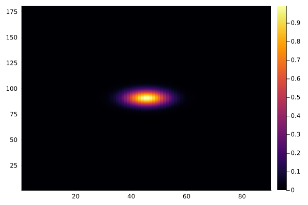
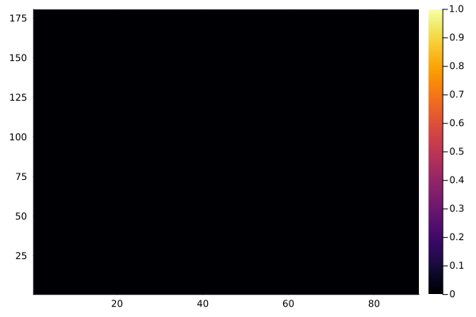

A full example on how to use ClimaTimesteppers with ClimaCore
In this tutorial, we will solve a diffusion equation on a sphere using ClimaCore, and a mixed implicit-explicit solver in ClimaTimesteppers.
First, we will set up the ClimaCore Spaces. We will define the implicit and explicit tendencies and Jacobian. Next, we will set up the ODE problem and solve it.
The setup
In this example, we consider a 3D spherical shell. We set initial data up on the lower face of this shell, and we will see it diffuse horizontally and vertically. We will treat the horizontal diffusion explicitly and the vertical one implicitly.
Let us start by importing the required pieces
import SciMLBase
import LinearAlgebra
import ClimaTimeSteppers
import ClimaCore
import Plots
import ClimaCore.MatrixFields: @name, ⋅, FieldMatrixWithSolverWe also define some units, mostly to make the code more explicit
const meters = meter = 1.0
const kilometers = kilometer = 1000meters
const seconds = second = 1.01.0Now, we will set up the ClimaCore Spaces. There is some boilerplate involved.
Radius and height of the spherical shell:
radius = 6000kilometers
height = 1kilometers1000.0Details of the computational grid:
number_horizontal_elements = 10
horizontal_polynomial_order = 3
number_vertical_elements = 1010We prepare a face-centered vertical grid by first creating the Domain, then the Mesh, and finally the Space
vertdomain = ClimaCore.Domains.IntervalDomain(
ClimaCore.Geometry.ZPoint(0kilometers),
ClimaCore.Geometry.ZPoint(height);
boundary_names = (:bottom, :top),
);
vertmesh = ClimaCore.Meshes.IntervalMesh(vertdomain; nelems = number_vertical_elements);
vertspace = ClimaCore.Spaces.FaceFiniteDifferenceSpace(vertmesh);For the horizontal grid, we create a 2D spectral element grid on a EquiangularCubedSphere mesh with Gauss-Lagrange-Lobatto quadrature points
horzdomain = ClimaCore.Domains.SphereDomain(radius);
horzmesh = ClimaCore.Meshes.EquiangularCubedSphere(horzdomain, number_horizontal_elements);
horztopology = ClimaCore.Topologies.Topology2D(ClimaCore.ClimaComms.context(), horzmesh);
horzquad = ClimaCore.Spaces.Quadratures.GLL{horizontal_polynomial_order + 1}();
horzspace = ClimaCore.Spaces.SpectralElementSpace2D(horztopology, horzquad);ClimaComms.context() specify where the simulation should be run (ie, on CPU/GPU).
Finally, we can combine vertspace and horzspace by extruding them (ie, taking their "Cartesian product")
space = ClimaCore.Spaces.ExtrudedFiniteDifferenceSpace(horzspace, vertspace);Now, we define the initial data. As initial data, we prepare Gaussian perturbation defined only on the lower vertical face. This Gaussian perturbation will diffuse horizontally and vertically
σ = 15.0
(; lat, long, z) = ClimaCore.Fields.coordinate_field(space);
φ_gauss = @. exp(-(lat^2 + long^2) / σ^2) * (z < 0.005);Note how we multiplied by (z < 0.005) to ensure that the Gaussian perturbation is only on the lowest face.
When working with ClimaCore, ClimaTimesteppers requires all the evolved variables to be packed in ClimaCore.FieldVectors. In this case, we only have one variable, which we will call my_var
Let us pack this into a a FieldVector
Y₀ = ClimaCore.Fields.FieldVector(; my_var = copy(φ_gauss));We copy φ_gauss because it it will be modified by the integrator.
The equations and the integrator
The diffusion equation for $u$ is $\partial_t u = K \nabla^2 u$, with $K$ diffusivity. To solve this equation with ClimaTimesteppers, we have to provide the tendencies (ie, the right-hand-sides). We want to solve the diffusion equation horizontally and vertically. Horizontally, we will treat the evolution explicitly (currently, there is no other option for our spectral elements). On the other hand, we will solve the vertical diffusion implicitly. So, this problem has two tendencies, the explicit and the implicit ones.
So, let us start by defining the explicit tendency.
A tendency for ClimaTimesteppers.jl is a function that generally takes four arguments (∂ₜY, Y, p, t). ∂ₜY is the right-hand side, which has to be modified by the function, Y is the current state, p is the cache (an optional collection of auxiliary variables) and t the time. Tendencies in ClimaTimesteppers.jl are in-place. In our case, we want the divergence of the gradient (the Laplacian) of my_var.
diverg = ClimaCore.Operators.WeakDivergence();
grad = ClimaCore.Operators.Gradient();
K = 3.03.0Notice how we picked WeakDivergence instead of normal divergence. We use the weak formulation of even derivatives (second-order, fourth-order, etc.) with the spectral element discretization because the outputs of derivative operators are not continuously differentiable. We also apply DSS to the outputs of weak derivatives before using them to compute higher-order odd derivatives.
function T_exp!(∂ₜY, Y, _, _)
∂ₜY.my_var .= K .* diverg.(grad.(Y.my_var))
return nothing
endT_exp! (generic function with 1 method)We do not specify boundary conditions here because we are on a sphere, where the only meaningful boundary conditions are periodic.
Next, we move to the implicit tendency. This is much more involved to set up. First, we need again divergence and gradient. However, this time we want them for the vertical direction
diverg_vert = ClimaCore.Operators.DivergenceC2F(;
bottom = ClimaCore.Operators.SetDivergence(0.0),
top = ClimaCore.Operators.SetDivergence(0.0),
);
grad_vert = ClimaCore.Operators.GradientF2C();We choose DivergenceC2F and GradientF2C to implement the Laplacian. F2C and C2F stand for face-to-center and center-to-face. The choice is motivated so that we have a chain of operations that brings us back to faces. We are working with faces so that we can cleanly impose boundary conditions. The boundary condition we are setting here is null divergence at the top and bottom of the domain.
function T_imp!(∂ₜY, Y, _, _)
∂ₜY.my_var .= K .* diverg_vert.(grad_vert.(Y.my_var))
return nothing
endT_imp! (generic function with 1 method)For an implicit solver, we also need to provide the Jacobian of the implicit tendency, or precisely, the Wfact. Wfact is dt*γ*J - 1, where J is the Jacobian, dt the timestep, and γ a factor that enter the specific solver. In some places, you might find Wfact_t, meaning, Wfacttransformed. The relationship betweenWfactandWfacttisWfact = - dt*γ Wfactt`.
The Jacobian matrix has to be specified as a ClimaCore.MatrixFields.FieldMatrix. This matrix takes pairs of variable names name1 and name2 and returns the type for ∂name1\∂name2. Given that we are working with gradient/divergence operations, our operations are tridiagonal, so have that
jacobian_matrix = ClimaCore.MatrixFields.FieldMatrix(
(@name(my_var), @name(my_var)) => similar(φ_gauss, ClimaCore.MatrixFields.TridiagonalMatrixRow{Float64}),
);Similarly, we define Wfact, as dtγ J - I.
div_matrix = ClimaCore.MatrixFields.operator_matrix(diverg_vert)
grad_matrix = ClimaCore.MatrixFields.operator_matrix(grad_vert)
function Wfact(W, Y, p, dtγ, t)
@. W.matrix[@name(my_var), @name(my_var)] = dtγ * div_matrix() ⋅ grad_matrix() - (LinearAlgebra.I,)
return nothing
endWfact (generic function with 1 method)With all of this, we are ready to define the implicit tendency. Implicit tendencies are SciMLBase.ODEFunctions and take in the actual tendency (similar to T_exp!), the Jacobian and Wfact:
T_imp_wrapper! =
SciMLBase.ODEFunction(T_imp!; jac_prototype = FieldMatrixWithSolver(jacobian_matrix, Y₀), Wfact = Wfact);On this type of spaces, we need to apply DSS to ensure continuity
function dss!(state, p, t)
ClimaCore.Spaces.weighted_dss!(state.my_var)
enddss! (generic function with 1 method)Now, we have all the pieces to set up the integrator
t0 = 0seconds
t_end = 500seconds
dt = 5seconds
prob = SciMLBase.ODEProblem(
ClimaTimeSteppers.ClimaODEFunction(; T_imp! = T_imp_wrapper!, T_exp!, dss!),
Y₀,
(t0, t_end),
nothing,
);We use SSPKnoth for this example
algo = ClimaTimeSteppers.RosenbrockAlgorithm(ClimaTimeSteppers.tableau(ClimaTimeSteppers.SSPKnoth()));And here is the integrator, where we set saveat = dt to save a snapshot of the solution at every timestep.
integrator = SciMLBase.init(prob, algo; dt, saveat = dt);
# Solution and visualizationTo visualize the solution, we use ClimaCore.Remapper and Plots
Let us a prepare a convenience function that remaps a ClimaCore.Fields onto a 2D Cartesian grid at a target z.
function remap(; target_z = 0.0, integrator = integrator)
longpts = range(-180.0, 180.0, 180)
latpts = range(-90.0, 90.0, 90)
hcoords = [ClimaCore.Geometry.LatLongPoint(lat, long) for long in longpts, lat in latpts]
zcoords = [ClimaCore.Geometry.ZPoint(target_z)]
field = integrator.u.my_var
space = axes(field)
remapper = ClimaCore.Remapping.Remapper(space, hcoords, zcoords)
return ClimaCore.Remapping.interpolate(remapper, field)[:, :, begin]
endremap (generic function with 1 method)First, let us have a look at the surface, where we have the initial Gaussian perturbation
Plots.heatmap(remap());
Plots.savefig("diff-hm1.png")"/home/runner/work/ClimaTimeSteppers.jl/ClimaTimeSteppers.jl/docs/src/tutorials/diff-hm1.png"
Now, let us double check that it is empty at higher elevation
Plots.heatmap(remap(; target_z = 0.1kilometers));
Plots.savefig("diff-hm2.png")"/home/runner/work/ClimaTimeSteppers.jl/ClimaTimeSteppers.jl/docs/src/tutorials/diff-hm2.png"
The extrema for my_var at the beginning of the simulation are
extrema(integrator.u)(0.0, 1.0)Let us focus on the surface level
extrema(ClimaCore.Fields.level(integrator.u.my_var, ClimaCore.Utilities.PlusHalf(0)))(4.766380244828023e-78, 1.0)And the first level
extrema(ClimaCore.Fields.level(integrator.u.my_var, ClimaCore.Utilities.PlusHalf(1)))(0.0, 0.0)Let us solve the equation
SciMLBase.solve!(integrator);Now, the extreme for my_var will have decreased, due to diffusion
extrema(integrator.u)(-6.761876953156297e-25, 0.999999997550737)Let us focus on the surface level
extrema(ClimaCore.Fields.level(integrator.u.my_var, ClimaCore.Utilities.PlusHalf(0)))(-6.761876953156297e-25, 0.999999997550737)And the first level
extrema(ClimaCore.Fields.level(integrator.u.my_var, ClimaCore.Utilities.PlusHalf(1)))(-8.793224768217338e-26, 0.1300418758764668)And we will see some development on the layers that did not have data before
Plots.heatmap(remap(; target_z = 0.1kilometers))
Plots.savefig("diff-hm3.png")"/home/runner/work/ClimaTimeSteppers.jl/ClimaTimeSteppers.jl/docs/src/tutorials/diff-hm3.png"This page was generated using Literate.jl.